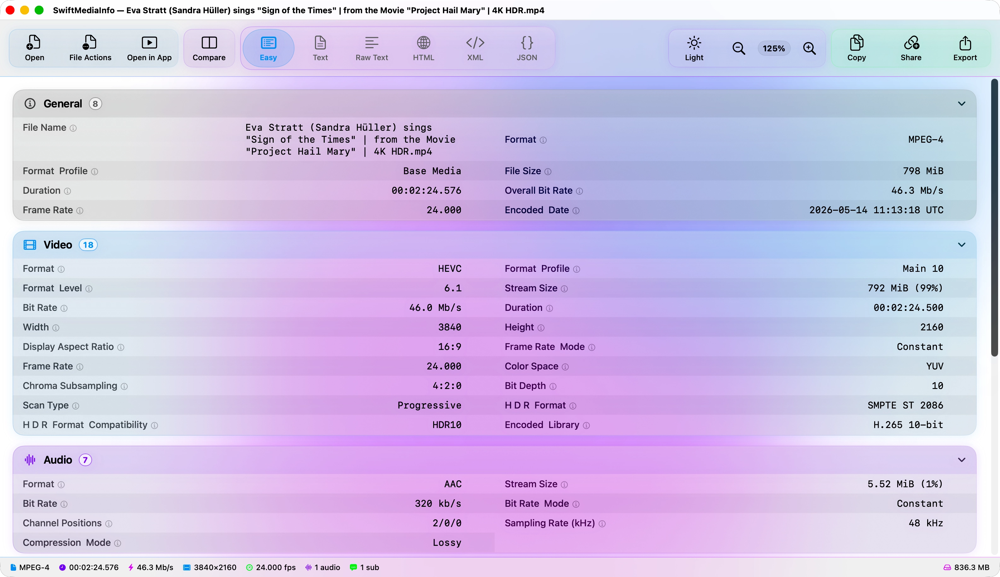
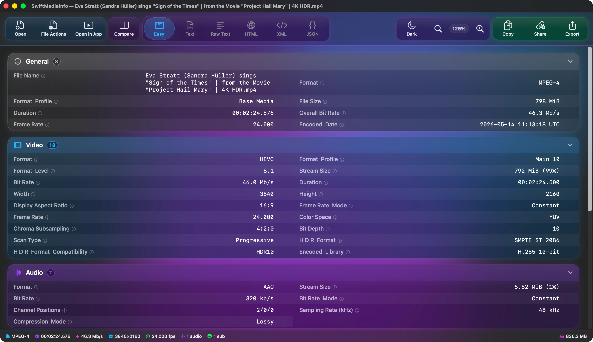
Every field, readable.
MediaInfo reports hundreds of fields per file. SwiftMediaInfo groups them by track, aligns the values in a monospaced column, and explains the ones nobody remembers.
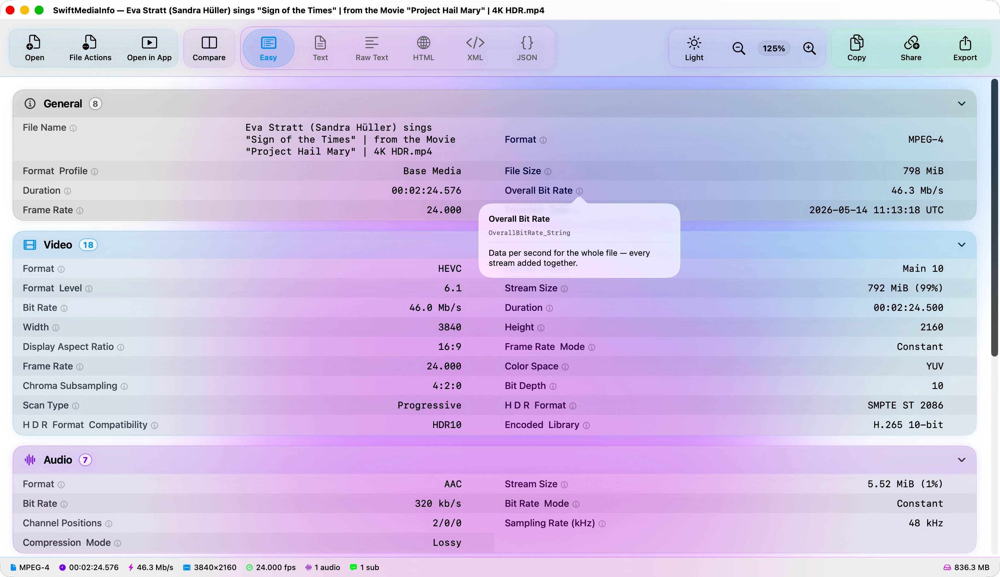
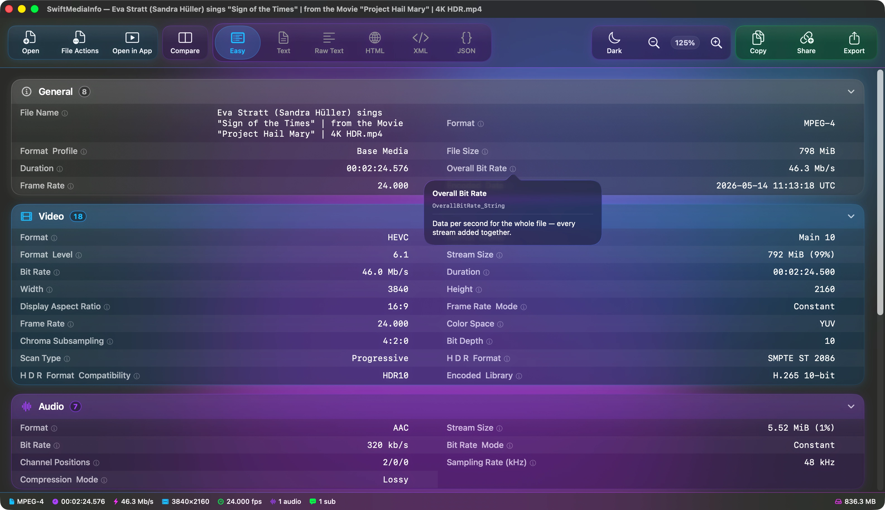
Grouped by track
General, video, audio, subtitles and menus, each in its own card, collapsible when you want the rest out of the way.
Plain-language notes
Around seventy fields carry an explanation. Hover the marker for a quick read, or click to keep it open.
Six ways to read it
Easy View, Text, Raw Text, HTML, XML and JSON. The same analysis, in whichever form you need.
See what changed.
Open two files side by side. Every field that differs is marked, and a summary lists the differences so you can jump straight to the one you were looking for.
Drop the second file.
Hold Option while dragging onto an open file and it opens as the comparison, without leaving the window. A control on the divider exchanges the two sides.
Take the result with you.
Export either file's report, or both together, in any of the six formats — including a single archive containing all of them.
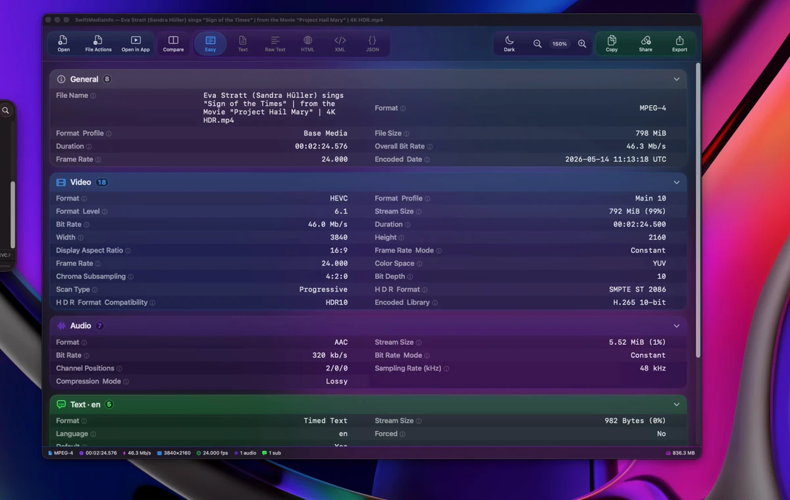
Start from Finder.
Right-click any media file and open it straight into SwiftMediaInfo. No launching the app first, no dragging anything anywhere.
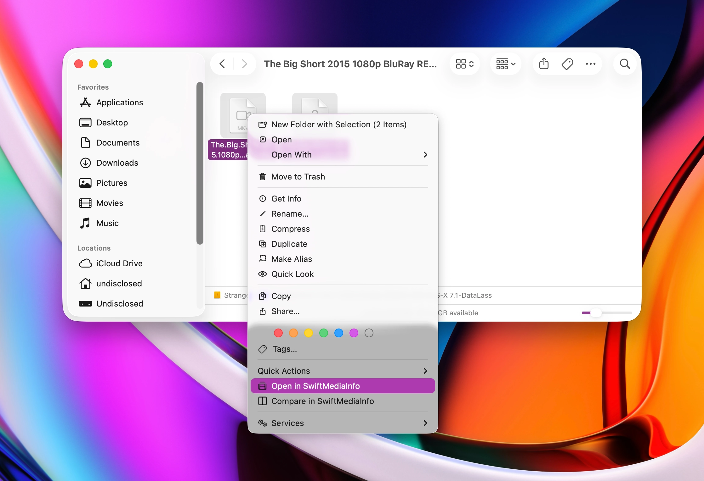
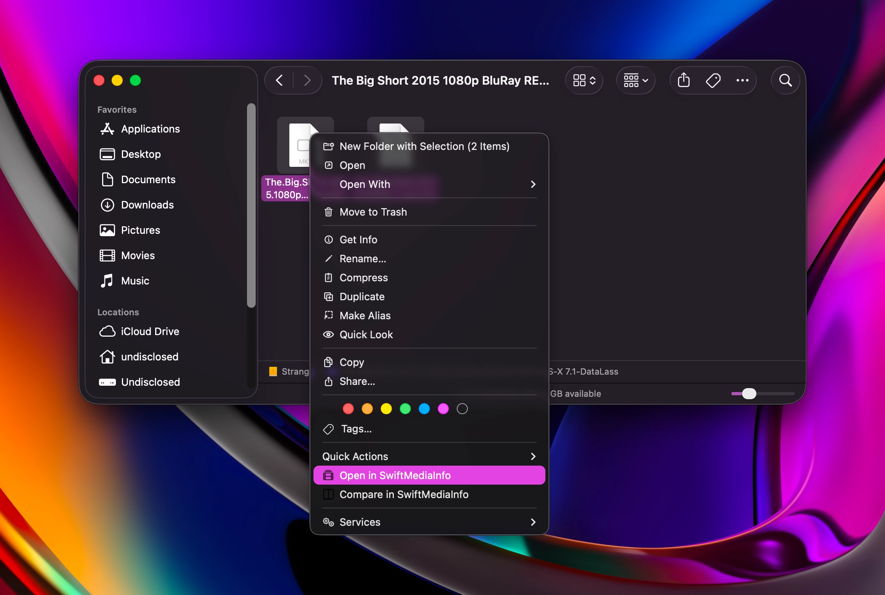
Verify what you have.
SwiftMediaInfo computes a SHA-256 checksum and includes it in the report, so an archive copy can be checked against the original years later.
Producing a checksum means reading every byte of the file, so SwiftMediaInfo waits until you ask for one. The progress it shows is the work itself, and cancelling stops that work immediately.
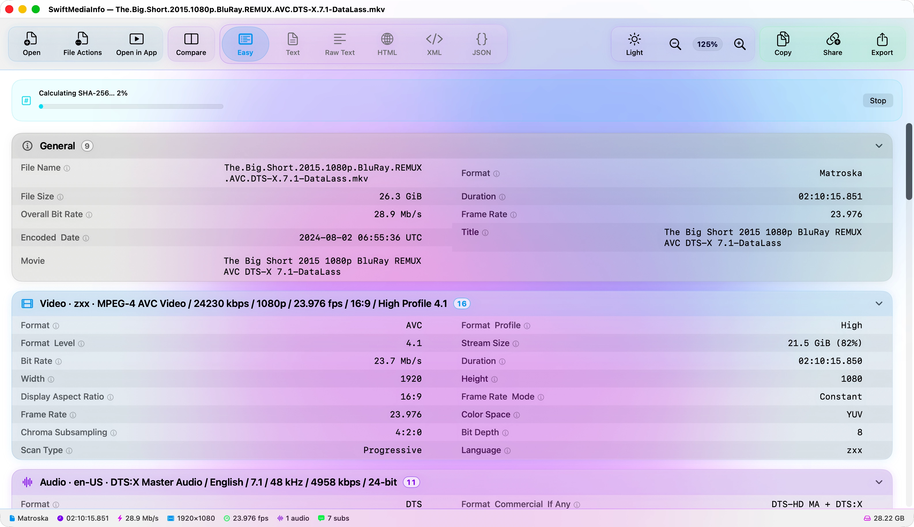
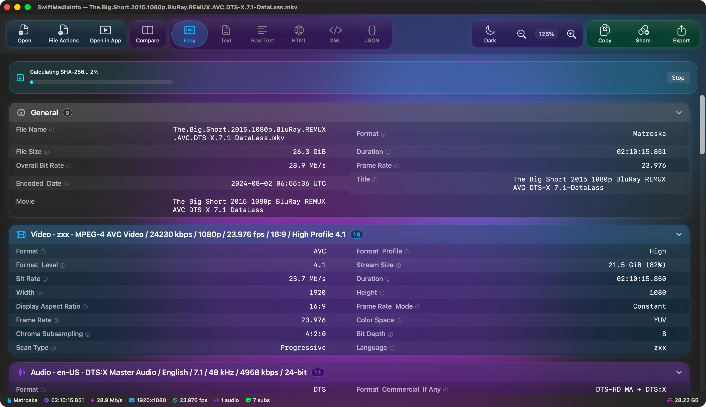
Make it yours.
The colour wash behind the glass is built from three shades, and all three are yours to choose. Pick from the palette the app ships with, or set your own.
The default. Drawn once and held still — indistinguishable from Animated at a glance, and free to keep on screen.
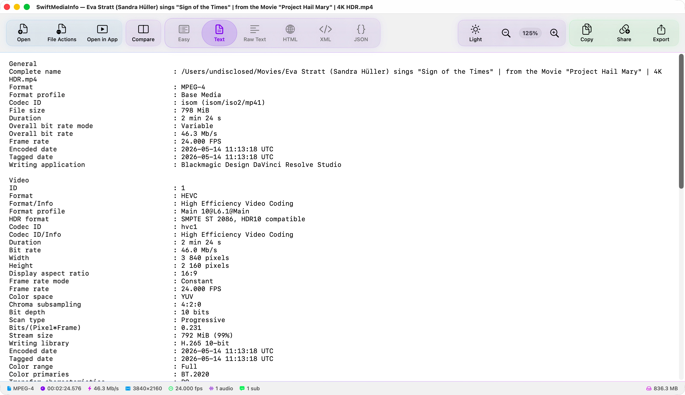
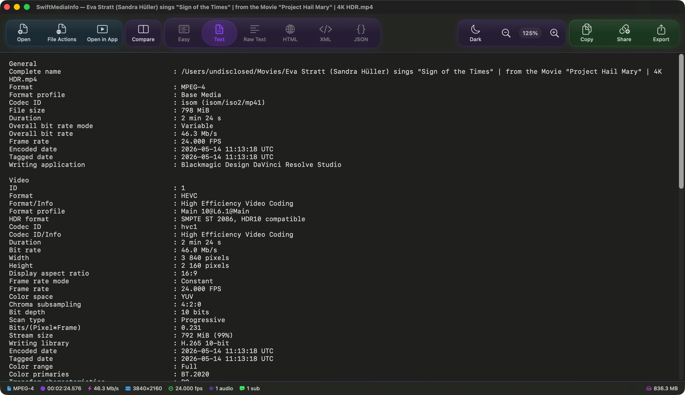
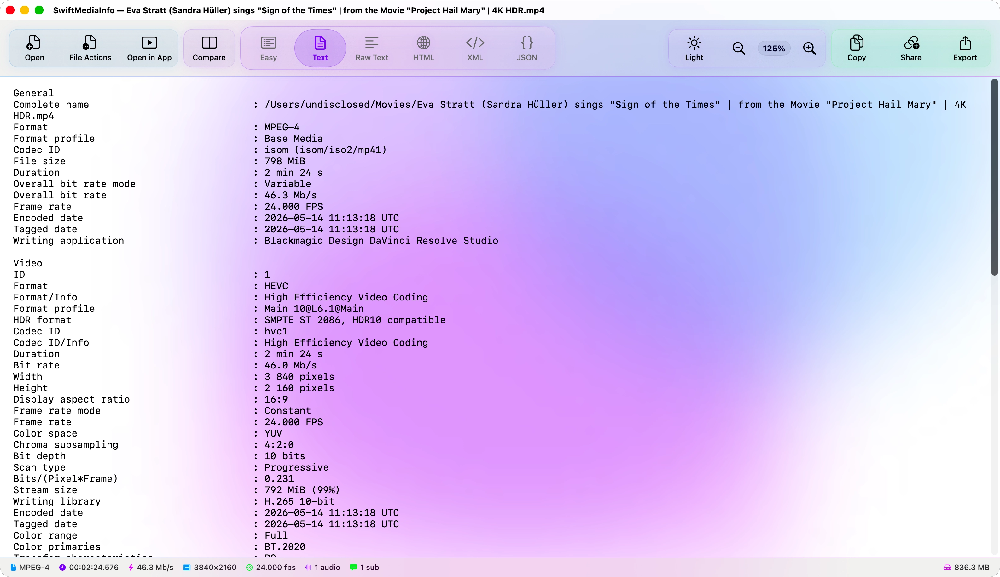
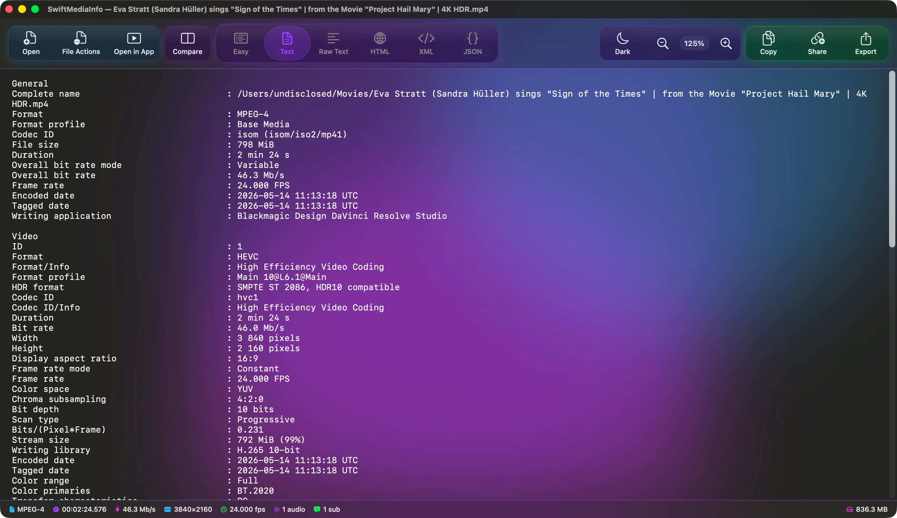
Every feature, for everyone.
No tiers, no trial, no purchase. Everything on this page is in the download, and it is released under the MIT licence — so it cannot be put behind a paywall, and it cannot be taken away.
Nothing leaves your Mac
Analysis happens locally. A report is only uploaded if you choose to share it, and you see exactly what is removed before it goes.
Read-only analysis
Reading metadata never alters a file. Renaming and moving to the Trash happen only when you ask for them.
Open to audit
Every line is public. You do not have to take any of this on trust.
Requirements
- macOS
- 26.0 or later
- Architecture
- Apple silicon
- Dependency
- mediainfo (installed for you)
- Licence
- MIT
- Price
- Free, permanently